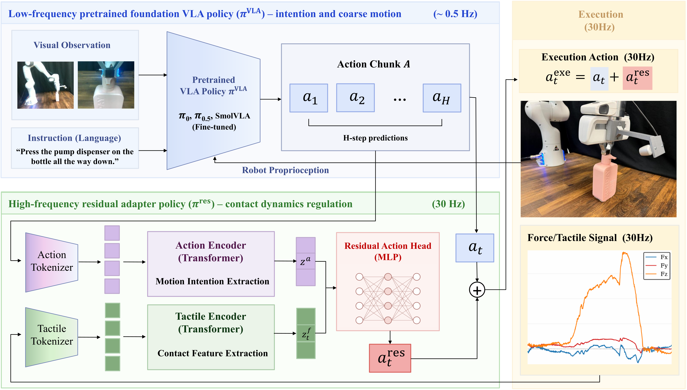
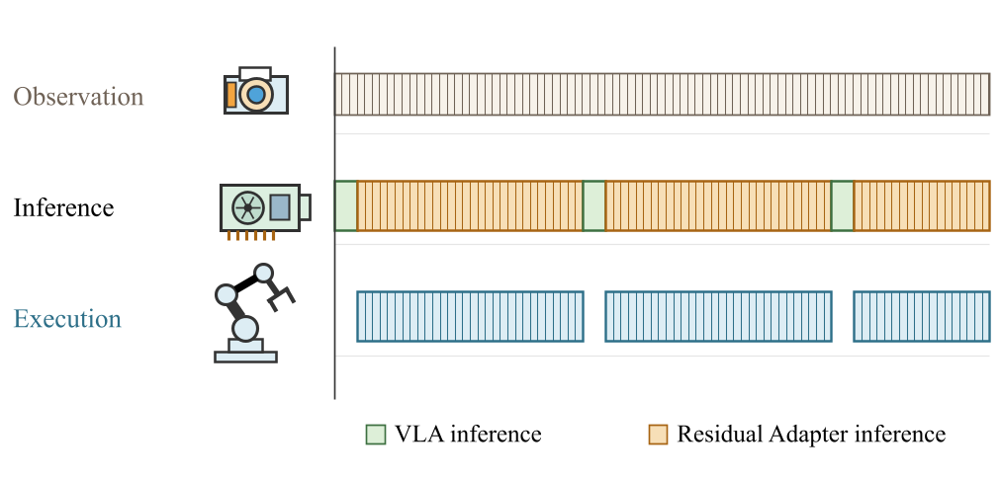
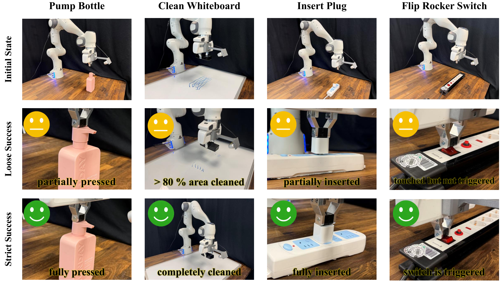

VisionTactileLanguageAction
VT-Bridge: Bridging Pretrained Foundation VLAs to VTLAs via Lightweight Residual Adaptation
Abstract
Vision-Tactile-Language-Action (VTLA) models have demonstrated clear advantages over Vision-Language-Action (VLA) models in contact-rich manipulation. However, developing VTLA models is severely constrained by the massive amounts of vision-tactile data and computational resources required. To address this bottleneck, we propose VT-Bridge, a lightweight residual adaptation strategy that bridges pretrained foundation VLAs to VTLAs. Rather than training a VTLA model from scratch or modifying the original architecture of a pretrained VLA, VT-Bridge employs an identical lightweight residual-adapter architecture across VLA backbones and uses backbone-specific weights to refine actions at the robot execution frequency. This design substantially lowers the data and training barriers. Specifically, it requires up to 50 vision-tactile demonstrations per task to fine-tune a VLA backbone and train a 0.98M-parameter residual adapter. Experiments with three representative VLA backbones (π0, π0.5, and SmolVLA) across four contact-rich manipulation tasks further demonstrate its consistent effectiveness across VLA architectures. On average, VT-Bridge raises the task completion rate from 11.7% with task-level VLA fine-tuning alone to 62.9%. Together, these findings demonstrate the broad applicability, effectiveness, and accessibility of VT-Bridge for contact-rich manipulation.
Key advantages
- Low Data Barrier: 50 vision-tactile demonstrations per task
- Run-time Reactivity (30Hz): Execution frequency contact dynamics regulation
- Substantial and Consistent Performance Gains: 11.7% (VLA Fine-tune) → 62.9% (VT-Bridge)
- Low Training Barrier:
- VLA Fine-tuning (4 x A100-SXM4 GPU, 8 h)
- Residual Adapter Training (RTX 3090 GPU, 30 min)
- 0.98M-parameter residual adapter (inference time: 0.7 ms)
- Pretrained VLAs Reuse and Compatibility: π0 & π0.5 & SmolVLA
Task completion rate (%)
- Fine-tuned
- VLA-Touch
- VT-Bridge
Methods

Low-frequency Pretrained VLA Backbone
The pretrained VLA backbone provides general-purpose visual-language understanding and guides the robot to complete the target manipulation task. Given the current observation and language instruction , the VLA policy predicts an action chunk:
where A = [a1, a2, …, aH] contains future actions.
High-Frequency Residual Adapter
Encode the intended motion once: The action transformer encoder processes the embedded action chunk and produces an action feature that represents the VLA’s coarse motion intention and the overall action trend within the chunk. This feature is computed once and reused throughout chunk execution.
Encode contact feature at each step: A force transformer encodes the most recent observations into . Here, it utilizes end-effector external force for Cartesian actions, or external joint torques for joint-space actions.
Residual action prediction: The encoded action feature and force feature are then concatenated and passed to a multilayer perceptron decoder to predict the residual action.
Adaptation before execution: The predicted residual action is then added to the corresponding nominal VLA action , yielding the adapted action that is sent to the robot for execution.
Training Process
We first fine-tune the VLA with LoRA, then freeze it and train the residual adapter. The target is the demonstrated desired command minus the aligned VLA prediction.
Non-contact samples receive a zero residual target to preserve VLA's motion in free space.
Inference and Execution
During deployment, the VLA backbone and residual adapter share the same GPU and operate in a temporally interleaved manner. At the beginning of each cycle, the VLA backbone predicts a new action chunk. Once the prediction is complete, the backbone becomes idle, and the system enters the adaptation-and-execution loop. This loop continues until all actions in the predicted chunk have been executed. The residual adapter then pauses, and the VLA backbone is invoked to predict the next action chunk. In this manner, the two inference processes do not overlap and therefore do not contend for GPU computation.

Experiments
We evaluate VT-Bridge with three VLA backbones: π0, π0.5, and SmolVLA. For each backbone, we compare our method against its task-specific fine-tuned version without tactile adaptation. We also compare against VLA-Touch, a representative VTLA method that builds on a pretrained VLA backbone.

Each method is evaluated in 20 independent trials per task for each backbone. To better characterize the last-inch bottleneck between geometric near-success and functional task completion, we define two success criteria for each task. Loose success indicates that the robot reaches a geometrically valid near-success state, while strict success requires full functional task completion.
Results
Overall Performance on Contact-Rich Manipulation
VT-Bridge achieves the highest strict success rate in every task–backbone combination. Across the three VLA backbones, it increases the average strict success rate from 11.7% to 62.9% compared with directly fine-tuning the backbones, demonstrating consistent benefits across contact-rich manipulation tasks.
| Backbone | Method | Pump Bottle | Clean Whiteboard | Insert Plug | Flip Rocker Switch | Avg. |
|---|---|---|---|---|---|---|
| π₀ | Fine-tuned | 0.0 (0/20) | 5.0 (1/20) | 0.0 (0/20) | 20.0 (4/20) | 6.3 |
| VLA-Touch | 0.0 (0/20) | 5.0 (1/20) | 0.0 (0/20) | 50.0 (10/20) | 13.8 | |
| VT-Bridge (ours) | 85.0 (17/20) | 20.0 (4/20) | 70.0 (14/20) | 85.0 (17/20) | 65.0 | |
| π₀.₅ | Fine-tuned | 0.0 (0/20) | 35.0 (7/20) | 0.0 (0/20) | 55.0 (11/20) | 22.5 |
| VLA-Touch | 0.0 (0/20) | 20.0 (4/20) | 5.0 (1/20) | 55.0 (11/20) | 20.0 | |
| VT-Bridge (ours) | 90.0 (18/20) | 40.0 (8/20) | 70.0 (14/20) | 75.0 (15/20) | 68.8 | |
| SmolVLA | Fine-tuned | 0.0 (0/20) | 10.0 (2/20) | 0.0 (0/20) | 15.0 (3/20) | 6.3 |
| VLA-Touch | 0.0 (0/20) | 5.0 (1/20) | 0.0 (0/20) | 25.0 (5/20) | 7.5 | |
| VT-Bridge (ours) | 70.0 (14/20) | 45.0 (9/20) | 65.0 (13/20) | 40.0 (8/20) | 55.0 |
Last-Inch Bottleneck in Contact-Rich Manipulation
Existing VLA models still struggle with the last inch of contact-rich tasks. As shown in the video, even after task-specific fine-tuning, these models often achieve geometrical near-success without functional task completion. For example, the robot can partially insert the plug into the socket but fails to fully seat it. Similarly, it can accurately reach and press the pump head, but cannot depress it far enough to dispense the liquid. This gap between geometrical near-success and functional completion constitutes the last-inch bottleneck.
To directly quantify a model’s ability to overcome the last-inch bottleneck, we report the conditional completion rate, defined as the proportion of geometric near-success cases that are converted into functional task completions. On Pump Bottle, none of the baseline–backbone combinations convert geometrical near-success into functional completion, while VT-Bridge achieves an average conditional completion rate of 90.6%. On Insert Plug, VT-Bridge achieves 85.9%, while fine-tuned VLAs remain at 0% across all three backbones. On average, VT-Bridge improves this rate by 58.8 percentage points over fine-tuned VLA models, demonstrating a substantially stronger ability to bridge this gap.
| Backbone | Method | Pump Bottle | Clean Whiteboard | Insert Plug | Flip Rocker Switch | Avg. |
|---|---|---|---|---|---|---|
| π₀ | Fine-tuned | 0.0 (0/19) | 5.3 (1/19) | 0.0 (0/13) | 23.5 (4/17) | 7.2 |
| VLA-Touch | 0.0 (0/5) | 5.9 (1/17) | 0.0 (0/16) | 66.7 (10/15) | 18.1 | |
| VT-Bridge (ours) | 89.5 (17/19) | 20.0 (4/20) | 93.3 (14/15) | 100.0 (17/17) | 75.7 | |
| π₀.₅ | Fine-tuned | 0.0 (0/20) | 35.0 (7/20) | 0.0 (0/16) | 100.0 (11/11) | 33.8 |
| VLA-Touch | 0.0 (0/10) | 20.0 (4/20) | 6.3 (1/16) | 84.6 (11/13) | 27.7 | |
| VT-Bridge (ours) | 94.7 (18/19) | 40.0 (8/20) | 77.8 (14/18) | 100.0 (15/15) | 78.1 | |
| SmolVLA | Fine-tuned | 0.0 (0/19) | 10.5 (2/19) | 0.0 (0/8) | 16.7 (3/18) | 6.8 |
| VLA-Touch | 0.0 (0/4) | 6.3 (1/16) | 0.0 (0/10) | 29.4 (5/17) | 8.9 | |
| VT-Bridge (ours) | 87.5 (14/16) | 45.0 (9/20) | 86.7 (13/15) | 61.5 (8/13) | 70.2 |
Ablations
Residual target construction: desired vs. executed poses. We compare residual targets constructed from the desired poses recorded in the demonstrations with those constructed from the corresponding executed poses, while keeping all other settings unchanged. The paper reports that using desired poses increases average strict success from 12.1% to 62.9%.
Strict success rate (%)
- π0
- π0.5
- SmolVLA
- Desired-Pose (Ours)
- Executed-Pose (Ablation)
Position and force analysis
To support safe physical interaction, we use impedance control throughout our experiments. In tasks requiring high interaction forces, controller compliance creates a pronounced offset between the desired and executed poses. Constructing residual targets from the desired poses explicitly incorporates this force-related offset into the training signal, allowing the robot to generate the required contact force without increasing the controller stiffness. Although higher stiffness could reduce this offset, it would also increase the risk of excessive interaction forces. By contrast, our design improves task reliability while maintaining safe physical interaction.
Pump Bottle
Desired-Pose (Ours)
Executed-Pose (Ablation)
Citation
@misc{PLACEHOLDER_CITATION_KEY,
title = {PLACEHOLDER_PAPER_TITLE},
author = {PLACEHOLDER_AUTHORS},
year = {PLACEHOLDER_YEAR},
url = {PLACEHOLDER_PAPER_URL}
}